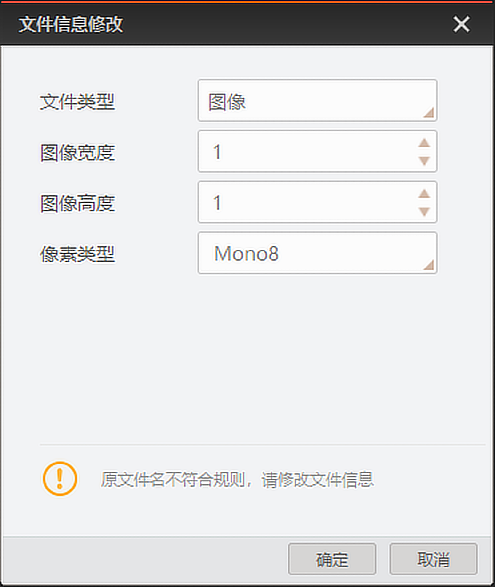

客户端支持对本地文件进行预览。
需预览窗口未关联相机进行预览。
文件为JPEG、BPM、PNG和TIFF格式的图像时，图像预览窗口可直接显示图像。
本地文件预览不支持加载Bayer10/12、Bayer10/12 packed格式的TiFF图像。
文件为RAW格式的图像时，若文件名称符合要求，图像预览窗口可直接显示图像；若不符合要求，则弹出文件信息修改窗口，请执行以下操作。
文件名称的命名规则为***_w图像宽度数值_h图像高度数值_p像素类型.raw (例如：Image_w3072_h2048_pBayerRG8.raw)。
文件为RAW格式的视频时，若文件名称符合要求，加载视频后点击图像预览窗口左上角的即可播放视频；若不符合要求，则弹出文件信息修改窗口，请执行以下操作。
文件名称的命名规则为***_w图像宽度数值_h图像高度数值_p像素类型_f帧率数值.raw (例如：Video_w3072_h2048_pBayerRG8_f2.raw)。
帧率为文件类型为视频时需要设置的参数。

图 1 文件信息修改